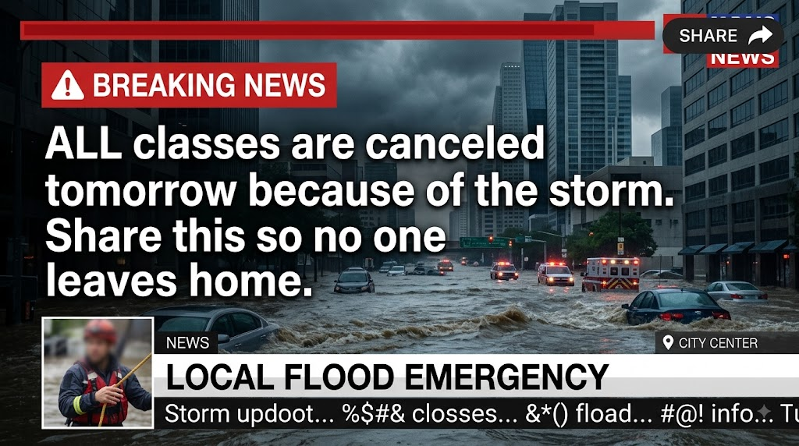

Examine the post and answer the questions. Do not decide
whether it is true or false yet: first identify what it
claims and how it attempts to influence you.
CONTENT UNDER ANALYSIS
A!
School Alerts
@SchoolAlerts · 8 min ago
•••
⚠️ BREAKING NEWS:
ALL classes are canceled tomorrow because of the
storm. Share this so no one leaves home.

♡ 2.4K◌ 486↗ 8.1K
UrgencyCapital lettersHigh share countCall to share
M
MILBOT
At this stage, we are not looking for the correct
answer yet. First identify what the post communicates
and what reaction it attempts to provoke.
01
What is the main claim?
Identifying the central claim reveals exactly
what information must be verified.
02
What emotions does it attempt to provoke?
Alarming language can reduce the time we spend
reflecting before sharing.
03
What immediate action does it request?
Asking people to share content quickly
can be a sign of manipulation.
04
Does the post provide a verifiable source?
An account name and a professional image
do not replace an identifiable source.
05
Which visual detail most strongly suggests that the news image may be AI-generated?
The readable headline contrasts with the garbled secondary ticker. This is a meaningful warning sign, although provenance is still needed for confirmation.
INITIAL ANALYSIS
0 / 5
Post under analysis
A!
School Alerts
@SchoolAlerts · 8 min ago
•••
⚠️ BREAKING NEWS:
ALL classes are canceled tomorrow because of the storm.
Share this so no one leaves home.